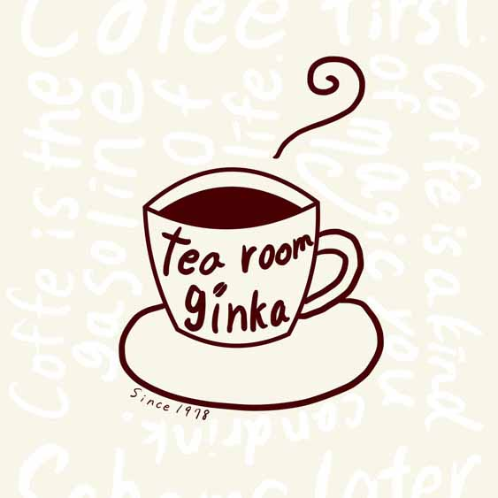
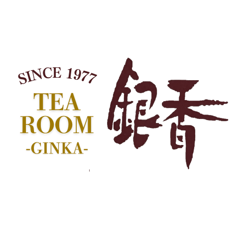

About Niko Minami

@mucchii25_niko

+81 070-3315-6661
@mucchii25_niko
+81 070-3315-6661
My parents have run a cozy community-based and japaenese traditional café(kissa) of continuing over 45 years in a non-urban area of Japan. During university breaks, I actively supported its rebranding by creating marketing strategies rooted in traditional values while introducing a modern perspective. This experience gave me deep insight into customer needs, seasonal product development, and local engagement.
This logo was designed to reflect a sense of simplicity and warmth, using earth tones and organic shapes inspired by the café's natural surroundings.
 Through this journey, I realized the power of storytelling and design in café marketing. I aim to further enhance my skills in digital marketing, especially SNS strategy and analytics, to help small businesses like my family's café grow sustainably in the digital era.